神奇糖果
富含能量的糖。
获取：阿露福遗迹(13,7) ／ 铃铛塔(36,13) ／ 华蓝市(20,9) ／ 6号公路(26,9) ／ 9号公路(63,2) ／ 12号公路(9,116) ／ 17号公路(18,83) ／ 23号公路(9,104) ／ …等 41 处
用途
富含能量的糖。 使1只宝可梦的等级提升1级。
标价 10000 口袋：道具
获取方式
地面隐藏
- 阿露福遗迹（区域134） · (13,7) · 数量 1 · 地图｜静态图
- 铃铛塔（区域135） · (36,13) · 数量 1 · 地图｜静态图
- 华蓝市（区域91） · (20,9) · 数量 1 · 地图｜静态图
- 6号公路（区域106） · (26,9) · 数量 1 · 地图｜静态图
- 9号公路（区域109） · (63,2) · 数量 1 · 地图｜静态图
- 12号公路（区域112） · (9,116) · 数量 1 · 地图｜静态图
- 17号公路（区域117） · (18,83) · 数量 1 · 地图｜静态图
- 23号公路（区域123） · (9,104) · 数量 1 · 地图｜静态图
- 34号道路（区域159） · (20,4) · 数量 1 · 地图｜静态图
- 桧皮镇（区域146） · (2,2) · 数量 1 · 地图｜静态图
- 浅葱市（区域149） · (43,29) · 数量 1 · 地图｜静态图
- 32号道路（区域157） · (31,105) · 数量 1 · 地图｜静态图
- 34号道路（区域159） · (33,32) · 数量 1 · 地图｜静态图
- 愤怒之湖（区域187） · (6,36) · 数量 1 · 地图｜静态图
- 50号水路（区域130） · (7,26) · 数量 1 · 地图｜静态图
- 满金市（区域147） · (12,12) · 数量 1 · 地图｜静态图
- 擂钵山（区域99） · (28,58) · 数量 1 · 地图｜静态图
- 漩涡岛（区域176） · (16,13) · 数量 1 · 地图｜静态图
- 破海洞穴（区域207） · (14,7) · 数量 1 · 地图｜静态图


人物剧情
- 对战开拓区（区域219） · (20,20) · 与坐标处人物交互 · 数量 1 · 地图｜静态图 · 触发条件待补
- 呆呆兽之井（区域127） · (42,35) · 与坐标处人物交互 · 数量 1 · 地图｜静态图 · 触发条件待补 · 相同来源 2 条
- 龙穴（区域217） · (1,4) · 与坐标处人物交互 · 数量 1 · 地图｜静态图 · 触发条件待补 · 相同来源 2 条
- 火箭队基地（区域133） · (12,12) · 与坐标处人物交互 · 数量 1 · 地图 · 触发条件待补
- 喇叭芽之塔（区域140） · (5,15) · 与坐标处人物交互 · 数量 1 · 地图｜静态图 · 触发条件待补
- 阿露福遗迹（区域134） · (3,17) · 与坐标处人物交互 · 数量 1 · 地图｜静态图 · 触发条件待补
- 冠军之路（区域132） · (6,3) · 与坐标处人物交互 · 数量 1 · 地图｜静态图 · 触发条件待补
- 浅红市（区域95） · (11,5) · 与坐标处人物交互 · 数量 1 · 地图｜静态图 · 触发条件待补
- 冰天地（区域181） · (5,5) · 与坐标处人物交互 · 数量 1 · 地图｜静态图 · 触发条件待补
- 擂钵山（区域99） · (32,20) · 与坐标处人物交互 · 数量 1 · 地图｜静态图 · 触发条件待补
- 铃铛塔（区域135） · (11,14) · 与坐标处人物交互 · 数量 1 · 地图｜静态图 · 触发条件待补
- 黑暗洞穴（区域177） · (6,38) · 与坐标处人物交互 · 数量 1 · 地图｜静态图 · 触发条件待补
- 桔梗市（区域145） · (59,26) · 与坐标处人物交互 · 数量 1 · 地图｜静态图 · 触发条件待补
- 光辉灯塔（区域186） · (9,9) · 与坐标处人物交互 · 数量 1 · 地图｜静态图 · 触发条件待补
- 桔梗市（区域145） · (2,20) · 与坐标处人物交互 · 数量 1 · 地图｜静态图 · 触发条件待补
- 满金市（区域147） · (3,2) · 与坐标处人物交互 · 数量 1 · 地图｜静态图 · 触发条件待补 · 相同来源 2 条
- 满金市（区域147） · (3,2) · 与坐标处人物交互 · 数量 1 · 地图｜静态图 · 触发条件待补 · 相同来源 2 条
- 湛蓝市（区域150） · (6,4) · 与坐标处人物交互 · 数量 1 · 地图｜静态图 · 触发条件待补
- 50号水路（区域130） · (17,55) · 与坐标处人物交互 · 数量 1 · 地图｜静态图 · 触发条件待补
- 擂钵山（区域99） · (4,37) · 与坐标处人物交互 · 数量 1 · 地图｜静态图 · 触发条件待补
- 不知名遗迹（区域209） · (4,2) · 与坐标处人物交互 · 数量 1 · 地图｜静态图 · 触发条件待补
- 27号道路（区域202） · (75,22) · 与坐标处人物交互 · 数量 1 · 地图｜静态图 · 触发条件待补
- 城都矿山（区域214） · (40,39) · 与坐标处人物交互 · 数量 1 · 地图｜静态图 · 触发条件待补


数据来源
- 来源文档：out/items.json（
/68） - 表索引 index 0068；内嵌 itemId 68；口袋 ITEMS (id=1)；type 1；hold_effect 0/0；importance 0；unk19 0
- 获取来源文档：maps_research/out/events/events.json、maps_research/out/scripts/scripts.json
- 获取记录 ID：
hidden:1:47:4、hidden:1:61:2、hidden:3:3:4、hidden:3:24:2、hidden:3:27:2、hidden:3:30:4、hidden:3:35:6、hidden:3:42:2、hidden:3:47:1、hidden:3:69:4、hidden:3:72:9、hidden:3:84:7、hidden:3:88:3、hidden:3:100:3、hidden:3:105:9、hidden:50:36:2、hidden:55:9:0、hidden:55:16:1、hidden:56:35:1、script_item_candidate:09CE0A11:54:12、script_item_candidate:std:081BE600:1:1、script_item_candidate:std:081BE600:54:2、script_item_candidate:std:081BE71E:1:44、script_item_candidate:std:081BE7A0:1:93、script_item_candidate:std:081BE919:1:56、script_item_candidate:std:081BE9DC:1:39、script_item_candidate:std:081BEAAC:11:7、script_item_candidate:std:081BEDF9:2:26、script_item_candidate:std:087B08E1:55:12、script_item_candidate:std:087BD8D4:55:21、script_item_candidate:std:089E4FA3:1:125、script_item_candidate:std:089E6A07:3:68、script_item_candidate:std:089F46CA:49:16、script_item_candidate:std:089FCA30:46:6、script_item_candidate:std:08AA0264:50:45、script_item_candidate:std:08AA0264:50:47、script_item_candidate:std:08AAD7D7:49:5、script_item_candidate:std:08AE0AA5:3:105、script_item_candidate:std:08D54E9B:55:10、script_item_candidate:std:08EC1948:56:22、script_item_candidate:std:08EC31C6:3:81、script_item_candidate:std:09CE0537:51:9 - 说明文字解码来源：
reference/SAVE_HOME_GAME_DATA.json.charmap
地点地图
共享RGB底图；点击可缩放定位。数字对应本页相关地点，不代表地图上全部事件。
阿露福遗迹

1 神奇糖果（13,7）
铃铛塔

1 神奇糖果（36,13）
华蓝市
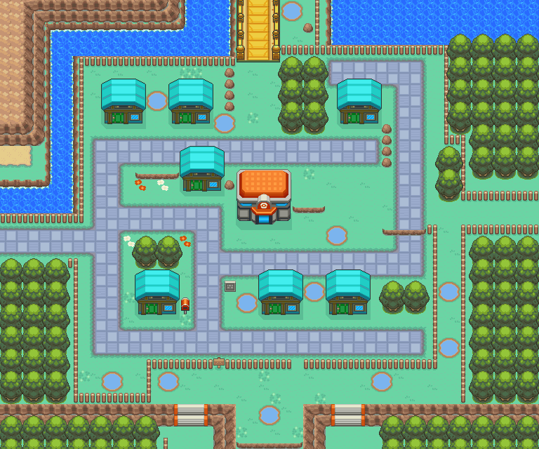
1 神奇糖果（20,9）
6号公路
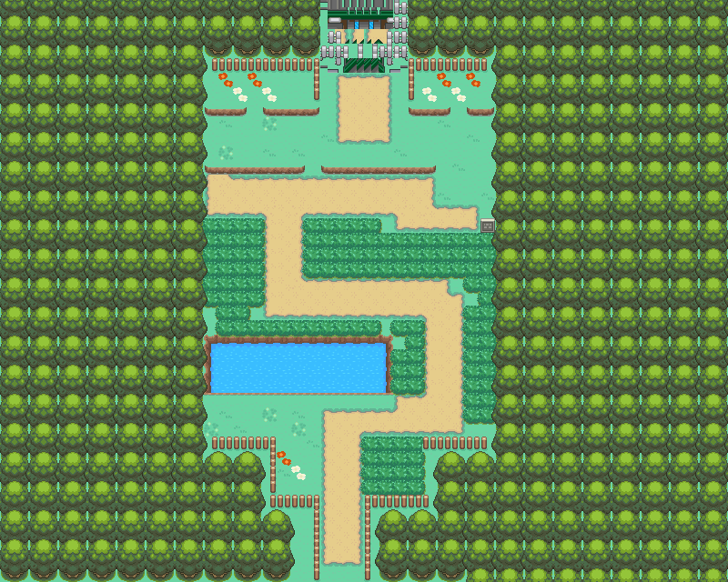
1 神奇糖果（26,9）
9号公路

1 神奇糖果（63,2）
12号公路
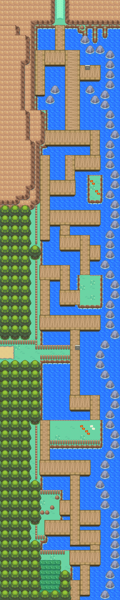
1 神奇糖果（9,116）
展开其余 35 张地点地图
17号公路
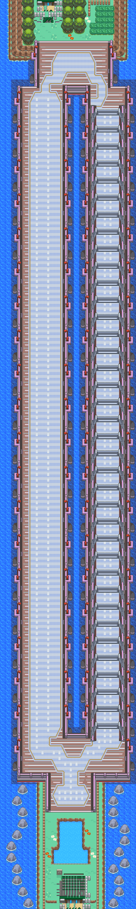
1 神奇糖果（18,83）
23号公路

1 神奇糖果（9,104）
34号道路
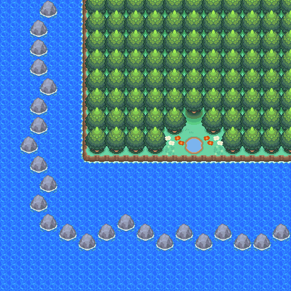
1 神奇糖果（20,4）
桧皮镇
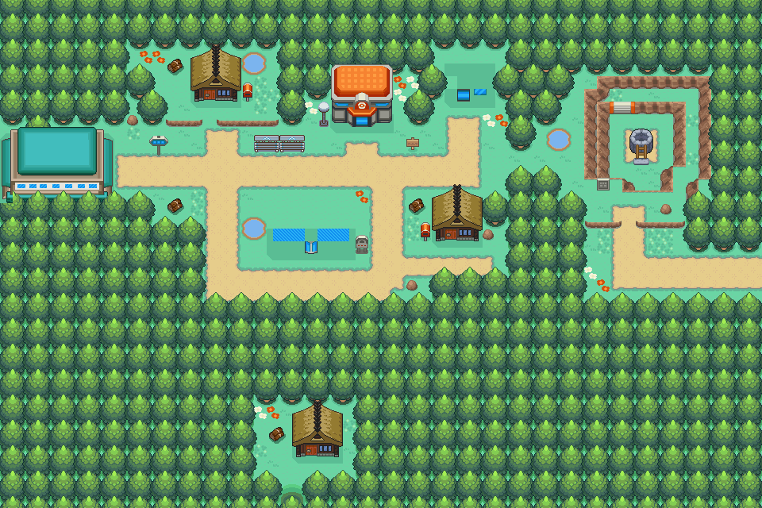
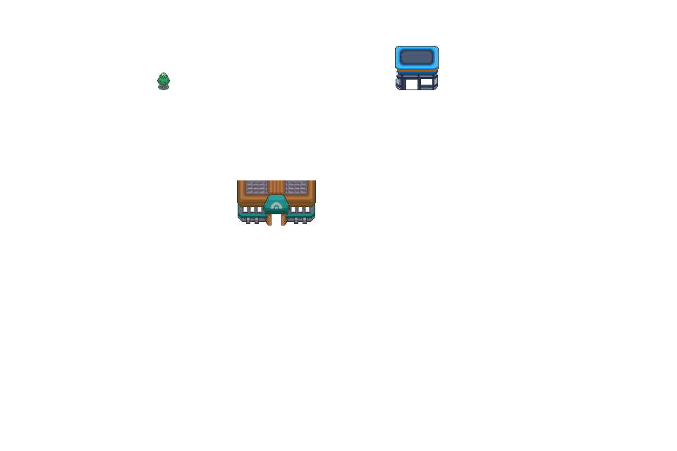
1 神奇糖果（2,2）
浅葱市


1 神奇糖果（43,29）
32号道路

1 神奇糖果（31,105）
34号道路

1 神奇糖果（33,32）
愤怒之湖

1 神奇糖果（6,36）
50号水路

1 神奇糖果（7,26）；2 神奇糖果（17,55）
满金市

1 神奇糖果（12,12）
擂钵山

1 神奇糖果（28,58）
漩涡岛

1 神奇糖果（16,13）
破海洞穴

1 神奇糖果（14,7）
对战开拓区

1 神奇糖果（20,20）
呆呆兽之井 · 原月见山布局

1 神奇糖果（42,35）
本图对应原MtMoon_1F布局；当前副图块表与主图块包组合产生重复黑色边框。地区段名称不能区分旧月见山布局与当前呆呆兽之井。保留源图，不擅自替换ROM图块。
龙穴

1 神奇糖果（1,4）
火箭队基地
喇叭芽之塔
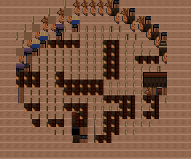
1 神奇糖果（5,15）
阿露福遗迹
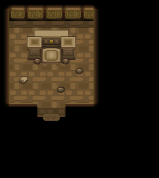
1 神奇糖果（3,17）
冠军之路

1 神奇糖果（6,3）
浅红市
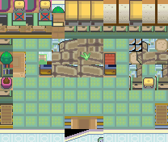
1 神奇糖果（11,5）
冰天地
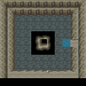
1 神奇糖果（5,5）
擂钵山

1 神奇糖果（32,20）
铃铛塔
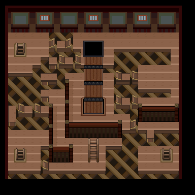
1 神奇糖果（11,14）
黑暗洞穴

1 神奇糖果（6,38）
桔梗市


1 神奇糖果（59,26）
光辉灯塔
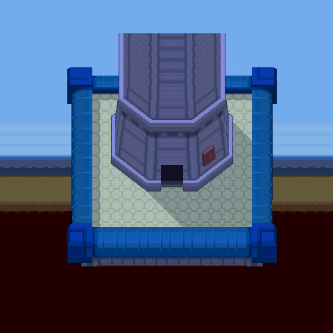
1 神奇糖果（9,9）
桔梗市
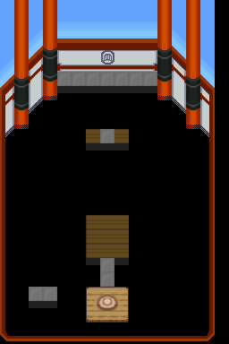
1 神奇糖果（2,20） 底图有8个图块缺少原始数据。
满金市
1 神奇糖果（3,2） 底图有2个图块缺少原始数据。
满金市

1 神奇糖果（3,2） 底图有2个图块缺少原始数据。
湛蓝市


1 神奇糖果（6,4）
擂钵山

1 神奇糖果（4,37）
不知名遗迹

1 神奇糖果（4,2）
27号道路

1 神奇糖果（75,22）
城都矿山

1 神奇糖果（40,39）